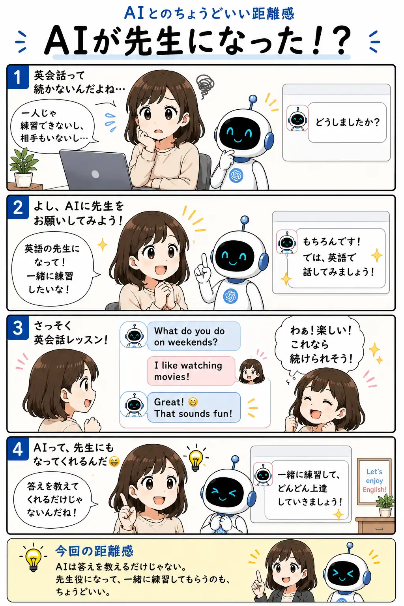

#070
AIが先生になった！？
一人でも英会話の練習ができた

メモ
AIは、分からないことを説明するだけでなく、先生役や練習相手としても使えます。
「初心者向けに」「間違いは日本語で直して」「旅行先の店員役をして」など、学び方や場面を伝えると、自分に合った練習をしやすくなります。
ただし、AIの説明や訂正が常に正しいとは限りません。大切な内容は教材や信頼できる情報でも確認しながら、気軽な反復練習に取り入れると安心です。
今回の距離感
AIは答えを教えるだけじゃない。先生役になって、一緒に練習してもらうのも、ちょうどいい。